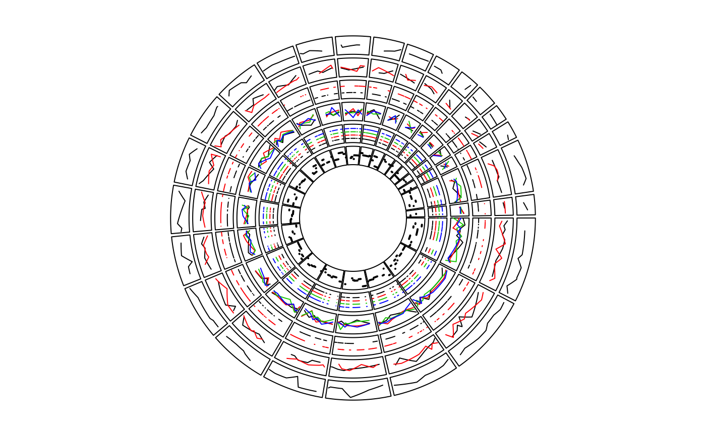

circos.genomicLines.RdAdd lines to a plotting region, specifically for genomic graphics
circos.genomicLines( region, value, numeric.column = NULL, sector.index = get.cell.meta.data("sector.index"), track.index = get.cell.meta.data("track.index"), posTransform = NULL, col = ifelse(area, "grey", "black"), lwd = par("lwd"), lty = par("lty"), type = "l", area = FALSE, area.baseline = NULL, border = "black", baseline = "bottom", pt.col = par("col"), cex = par("cex"), pch = par("pch"), ...)
| region | A data frame contains 2 column which correspond to start position and end position |
|---|---|
| value | A data frame contains values and other information |
| numeric.column | Which column in |
| sector.index | Pass to |
| track.index | Pass to |
| posTransform | Self-defined function to transform genomic positions, see |
| col | col of lines/areas. If there are more than one numeric column, the length of |
| lwd | Settings are similar as |
| lty | Settings are similar as |
| type | There is an additional option |
| area | Settings are similar as |
| area.baseline | Deprecated, use |
| baseline | Settings are similar as |
| border | Settings are similar as |
| pt.col | Settings are similar as |
| cex | Settings are similar as |
| pch | Settings are similar as |
| ... | mysterious parameters |
The function is a low-level graphical function and usually is put in panel.fun when using circos.genomicTrackPlotRegion.
# \donttest{ ### test bed circos.par("track.height" = 0.1) circos.initializeWithIdeogram(plotType = NULL)bed = generateRandomBed(nr = 100) circos.genomicTrackPlotRegion(bed, panel.fun = function(region, value, ...) { circos.genomicLines(region, value, type = "l", ...) })bed1 = generateRandomBed(nr = 100) bed2 = generateRandomBed(nr = 100) bed_list = list(bed1, bed2) circos.genomicTrackPlotRegion(bed_list, panel.fun = function(region, value, ...) { i = getI(...) circos.genomicLines(region, value, col = i, ...) })circos.genomicTrackPlotRegion(bed_list, stack = TRUE, panel.fun = function(region, value, ...) { i = getI(...) circos.genomicLines(region, value, col = i, ...) })bed = generateRandomBed(nr = 100, nc = 4) circos.genomicTrackPlotRegion(bed, panel.fun = function(region, value, ...) { circos.genomicLines(region, value, col = 1:4, ...) })circos.genomicTrackPlotRegion(bed, stack = TRUE, panel.fun = function(region, value, ...) { i = getI(...) circos.genomicLines(region, value, col = i, ...) })bed = generateRandomBed(nr = 100) circos.genomicTrackPlotRegion(bed, panel.fun = function(region, value, ...) { circos.genomicLines(region, value, type = "segment", lwd = 2, ...) })circos.clear() # }